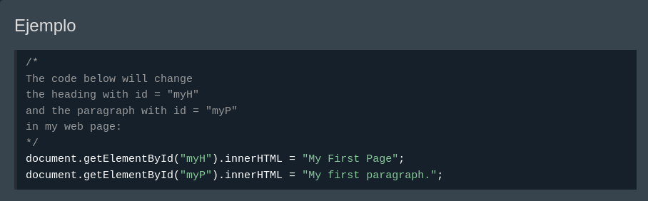

Los comentarios de JavaScript se pueden utilizar para explicar el código JavaScript y hacerlo más legible.
Los comentarios de JavaScript también se pueden utilizar para evitar la ejecución al probar código alternativo.
Los comentarios de una sola línea comienzan con //.
//JavaScript ignorará cualquier texto entre y al final de la línea (no se ejecutará).
Este ejemplo utiliza un comentario de una sola línea antes de cada línea de código:
Este ejemplo utiliza un comentario de una sola línea al final de cada línea para explicar el código:
Los comentarios de varias líneas comienzan con /*y terminan con */.
Cualquier texto entre /*y */será ignorado por JavaScript.
]Este ejemplo utiliza un comentario de varias líneas (un bloque de comentarios) para explicar el código:
] 